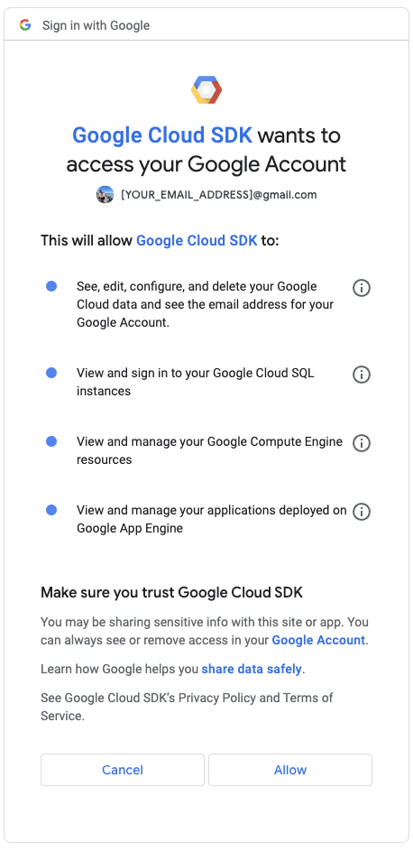

3 Part 2: Node, gcloud
These configurations are needed to run our Node-based development environments. This comes up about half-way through the semester.
3.1 Installing Node
Node is a Javascript runtime environment we will use to build news applications. Installation is different for Mac vs Windows.
We need to make sure you have xcode tools first.
3.1.0.1 Checking xcode
Run this in your Terminal:
xcode-select -p
You should get a path in return. Something like “/Library/Developer/CommandLineTools”.
If you don’t AND ONLY IF YOU DON’T, you need to install it.
3.1.0.2 Installing xcode-select (only if needed)
In your Terminal run this:
xcode-select --installA software update popup window will appear that asks: “The xcode-select command requires the command line developer tools. Would you like to install the tools now?” choose to confirm this by clicking Install, then agree to the Terms of Service when requested (feel free to read them thoroughly, we’ll be here).
It can take a long while to download and install. If you get an error on this install, let me know as I have a copy I can give you.
3.1.0.3 NVM
We will use NVM to install Node.js. Again, follow the prompts and you should be fine.
- Go to this page and copy the first code chunk that starts with
curl. - Paste that into your Terminal and run it.
- After it is done, quit Terminal and relaunch it.
- Test: After relaunching a terminal do
nvm listto make sure you don’t get an error.
3.1.0.4 Node
Use NVM to install Node.
Install the long-term support of Node:
nvm install --ltsTest: Do
node -vto make sure it worked. It should give you back a version, like “v18.18.0”.
Microsoft recommends using nvm-windows to install node, so let’s go with that.
Follow these directions to install nvm-windows BUT READ THE NEXT STEPS FIRST.
When they say Launch Powershell, you should use Git Bash instead.
When it gets to installing Node.js DON’T DO
nvm install latest. Instead, use this command:nvm install --lts
To make sure it worked, in Git Bash do:
node --version- You should get a response that says you are using a version, like
v18.18.0.
- You should get a response that says you are using a version, like
3.1.1 Update npm
NPM is a package repository. We need to update it.
To update npm, run this:
npm install -g npmTest: Do
npm -vand it should return with a version number.
3.2 ICJ project setup
There are some additional global npm tools that we need to install for our tour of NodeJS-based build tools.
Run this:
npm install -g gulp degit
These are for the task manager Gulp and a scaffolding tool Degit.
3.3 Google Drive authentication
There is a point in class when your computer will need access to your Google Drive account. Much like ssh keys, we’ll need specific credentials that work only for you. We will use the Google Cloud Project’s command line interface tool to do this. Otherwise known as the gcloud CLI.
IMPORTANT: You must have and use a PERSONAL Gmail/Google account for this process. Your UTMail Google account will not work.
3.3.1 Install Google Cloud tools
Again, differences between macOS and Windows
To make the installation of packages simple, we are going to use the MacOS package manager brew to install some Google Cloud tools. You should already have brew installed from earlier in the semester.
Run the following to install the Google Cloud SDK
brew install --cask google-cloud-sdkTest: Run
gcloud --versionand make sure a version number is returned.
- Follow the instructions found in this link to download and install the
gcloudCLI tool. - Test: Once the installation has finished, run the command
gcloud --versionin your terminal, and you should get some output similar to this:Google Cloud SDK 428.0.0
3.3.2 Authenticate our session
We are now going to authenticate our Google credentials on our local machine. Make sure to select your personal gmail account for this part. If you use your utexas.edu email, you won’t have permission to do what we need to do.
It works best if you log out of all your accounts and then log in just with the personal account. Be sure to do this in your default brower (like the one that opens when you click on a link in email.)
In a web browser, make sure you are logged into your PERSONAL Google account.
In a Terminal, use the following command:
gcloud auth login --brief --enable-gdrive-access
This will open a browser where it will show you all of your available Google names. After you select your personal gmail account, you will be sent to a permissions screen that will look something like this:

Click Allow and you will have given your computer access to manage files on your Google Drive and in the Google Cloud Project.
- In the same browser that opened, go to [https://console.cloud.google.com/], where it should ask you to OK the terms of service.
3.3.3 Create and configure project
Again, be in your personal Google account as you will have to authenticate again.
We are going to run through several gcloud commands to set you computer to access Google Docs and Google sheets through programing. It’s a lot of ecsoteric steps and things could go wrong at each step. I don’t outline the output you get in return, but there can be a little or a lot.
You may be asked some questions during installation. You should be able to answer with the default answer (usually capitalized). If you try these steps more than once you might be errors that a project exists. Ask for help.
Just keep an eye out for ERROR or can't find [whatever] and hollar if that happens.
Quit your terminal and relaunch it for this.
You have to edit the commands below to be personal to you. Everywhere you see icj-YOURNAME you need to edit that part of the command to use your first name, all lowercase, like icj-alex. Then you use that same value for the later commands that use icj-YOURNAME. PLEASE ASK FOR HELP IF YOU NEED IT.
Do this command to create the project:
gcloud projects create icj-YOURNAME --set-as-default --name="ICJ Project"Do this to log in and set your project as a default:
gcloud auth application-default loginNext, we’ll create a Google service account:
gcloud iam service-accounts create generic-service-accountNext we need to bind the service account to our project with the command below. You should get a reply that reports bindings for roles of editor and owner. (There are TWO places here where you have to switch out
icj-YOURNAME.)gcloud projects add-iam-policy-binding icj-YOURNAME --member='serviceAccount:generic-service-account@icj-YOURNAME.iam.gserviceaccount.com' --role='roles/editor'Then we enable the Google Docs and Sheets API for your project:
gcloud services enable docs.googleapis.com sheets.googleapis.comNow we’ll create a service account authorization key. This is similar to ssh key above, but for Google. Again, swap out
icj-YOURNAME:gcloud iam service-accounts keys create "$HOME/.config/gcloud/service_account_key.json" \ --iam-account=generic-service-account@icj-YOURNAME.iam.gserviceaccount.comThen add the key to your
.bash_profilewith this commaned:echo 'export GOOGLE_APPLICATION_CREDENTIALS="$HOME/.config/gcloud/service_account_key.json"' >>~/.bash_profileSync your terminal with the updated bash profile:
source ~/.bash_profile
Yes, that was a lot. Hopefuly it worked. We’re about to find out.
3.4 Test these settings
- Create a folder in your icj folder called
yourname-test. - Open that folder in Visual Studio Code.
- Open a VS Code Terminal and run:
degit utdata/icj-google-fetch-test#mainYou should get this in return:
> cloned utdata/icj-google-fetch-test#main
And it will download a bunch of files into your folder.
- Run
npm ci. This will also download a bunch of files. It might take a couple of minutes to run. - Run
gulp fetch.
If everything works, you should have a return like this:
$ gulp fetch
[14:38:53] Using gulpfile ~/Documents/icj/icj-fetch-test/gulpfile.js
[14:38:53] Starting 'fetch'...
[14:38:53] Finished 'fetch' after 8.61 ms
Downloaded `library` (1RgMhjtkXlbbf9uzSzy_xPRKwxcVZIZqVytgM_JoU4E4)
Downloaded `bookstores` (1gDwO-32cgpBDn_0niV0iu6TqQTaRDr4nmSqnT53magY)Your path might differ for “Using gulpfile”, but what you are looking for is that two files were downloaded, one called library and one called bookstores.
You should be done!